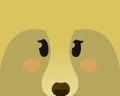
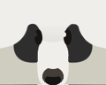
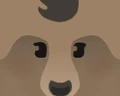
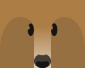
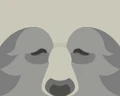

In Bee Swarm Simulator, there are bears located throughout the map. Bears are in-game characters that players can interact with and some have no function at all. 18 bears have made an appearance so far, but only 17 are currently in the game.
Quest bears are bears found in places around the whole map. Unlike traveling bears, these bears are permanent, and will stay in the game unless they are removed by Onett. They can all interact with the player and gives quests for a reward, and have dialogue for the player to read.
Black Bear |
 Mother Bear |
 Panda Bear |
 ScienceBear |
|  Dapper Bear |
 Polar Bear |
 Brown Bear |
 Spirit Bear |